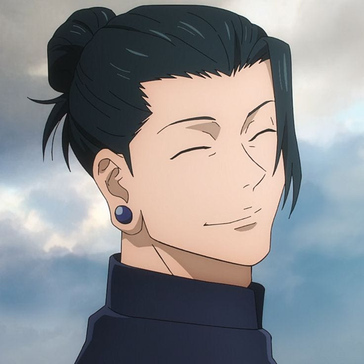

GOJO
A teacher at Tokyo Metropolitan Curse Technical School and one of the protagonists of the hit anime and manga series Jujutsu Kaisen, Satoru Gojo is a tall and lean man in his late twenties with a head full of white hair and vivid blue eyes which are covered by a blindfold.
GETO
Suguru Geto is a fictional character from Gege Akutami's manga Jujutsu Kaisen 0. Suguru Geto is a powerful sorcerer who was previously friends with Satoru Gojo. He seeks the Queen of Curses Rika Orimoto, who in turn is searching for the protagonist of the prequel series, Yuta Okkotsu.
SUKUNA

Ryomen Sukuna is a fictional character and one of the central antagonists of the manga series Jujutsu Kaisen created by Gege Akutami. A Heian Era sorcerer, he was once known notoriously as the King of Curses and legended as the greatest Sorcerer to ever live.
YUJI
Yuji Itadori is a fictional character and the main protagonist of the manga series Jujutsu Kaisen created by Gege Akutami.